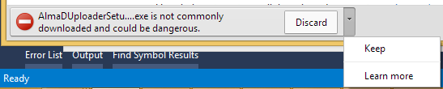
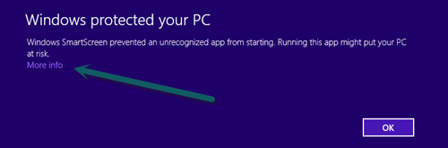
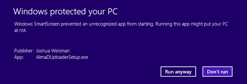
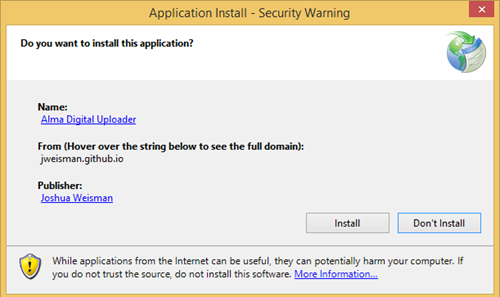
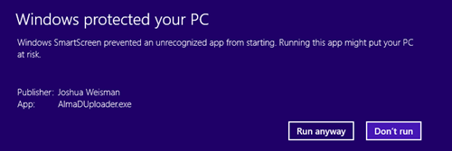

Download
Click the button below to download and install the Alma Digital Uploader
Download & Install
The Alma Digital Uploader runs on Windows 7 or 8.
Installation Instructions
It appears you're not using either Windows 7 or 8. Please note the Alma Digital Uploader is only supported on those versions.
Windows 7
Click the button above to download the AlmaDUploaderSetup.exe file.
Run the AlmaDUploaderSetup.exe from your download folder. When prompted, agree to run the file.

When prompted, agree to install the application.

The application will download and install. Once complete, it will open automatically.
To open the application later, use the shortcut in your Start menu.

Windows 8
Click the button above to download the AlmaDUploaderSetup.exe file.
Windows 8 provides security checks which may cause additional confirmation windows to appear. When you download the AlmaDUploaderSetup.exe file, your browser may prompt you to discard the file. Click the down arrow and then click the "Keep" option.

Double click the AlmaDUploaderSetup.exe file to run it. Windows may display a screen which warns against running the file.

Click the More Info link, and then click "Run anyway"

When prompted, agree to install the application.

The application will download and install. Once complete, Windows may again display a screen which warns against running the file. Select the "More info" link again, then click "Run anyway."

The application will then open automatically.
To open the application later, use the shortcut in your Start Menu.